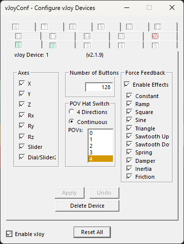
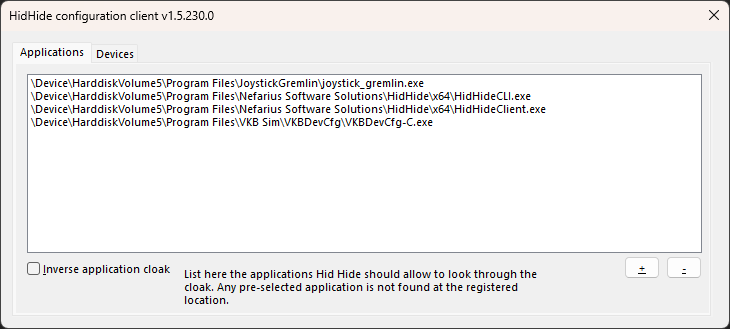
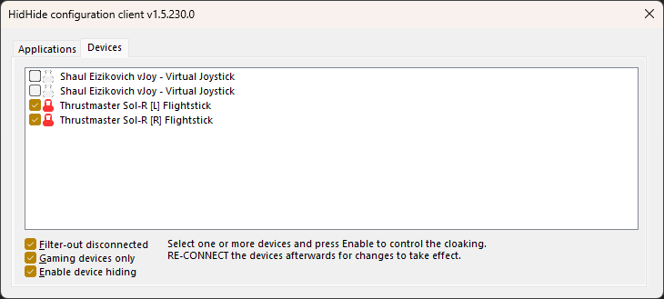
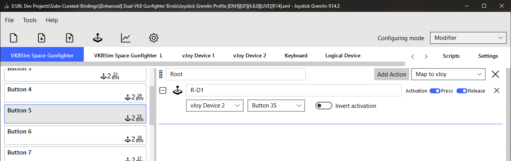
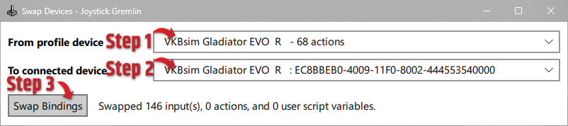
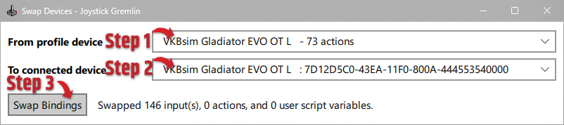
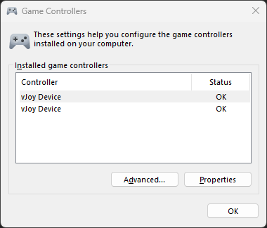

Software Configuration¶
If your software is already installed, start here. This page provides the exact settings for each program used with curated binds.
Note
You should also consult the README for your specific joystick setup, since some combinations require slight changes.
vJoy Configuration¶
- Open
vJoy Configuration - First vJoy Device: check all axes, set
128buttons,ContinuousPOV mode, and4POV hats. - Second vJoy Device: check all axes, set
127buttons,ContinuousPOV mode, and4POV hats. - Apply changes and close the tool before loading Joystick Gremlin.

Warning
- You will almost certainly need to restart windows after making changes here.
- Two vJoy devices are needed for most joystick profiles due to the 8-axis-per-device limitation.
- If your left/right sticks act swapped in game, fix the device order with the
pp_resortdevicesconsole command — see Joystick order. It's a one-time fix; never edit the exported XML to work around it. - If Star Citizen detects more than two vJoy devices, users commonly run into sorting headaches. If you are adding rudder pedals on top of the config there should be enough axis between the two vjoys.
HIDHide Configuration¶
Applications (Allow-List)¶
This list controls which programs are allowed to see physical devices.
- Confirm
HIDHide Configuration Clientis present (normally default) - Add
joystick_gremlin.exe - Add manufacturer software that needs direct hardware visibility (for example: VKBDevCfg, Virpil software, Thrustmaster TARGET, MOZA tools)
Warning
Do not add Star Citizen to this allow-list. Star Citizen must not see physical sticks directly when using curated vJoy-based binds.

Devices¶
This is where we blacklist all physical devices that might interfere with SC.
- Hide physical joystick and throttle devices
- Hide non-joystick HID devices that may inject game input (for example: gamepads, Razer Tartarus, keyboards with optical/analog switches)
- Do not hide vJoy devices
- Enable Device Hiding only after the allow-list is complete
Analog keyboards count as four game controllers
Wooting and other analog keyboards enumerate as 4 joystick devices, which pushes your vJoy devices down Star Citizen's joystick order (they show up as joystick 5 and 6 instead of 1 and 2). Hide the keyboard in this Devices tab — it still types normally when hidden; you only lose its analog-gamepad emulation, which Star Citizen doesn't support anyway.
Warning
Common breakpoints: - Enabling HIDHide before adding required applications - Leaving gamepads/keypads/analog keyboards unhidden - Adding Star Citizen to the allow-list
Re-plug your sticks after enabling Device Hiding
HIDHide only starts cloaking a device the next time Windows enumerates it. After the allow-list is done and Enable Device Hiding is ticked, unplug your joysticks and plug them back in (or reboot). Until you do, Star Citizen can still see the raw physical sticks — doubled inputs / wrong axes — even though HIDHide is configured correctly. This is a frequent "I did everything right but it's still broken" snag.

Joystick Gremlin Configuration¶
- Open Joystick Gremlin (R14.x — 14.3 or newer; R13 is no longer supported).
-
Load the Joystick Gremlin profile from your stick's folder. The filename starts with
Joystick Gremlin Profileand ends in[R14].xml. (The other.xmlfiles in the folder — thelayout_ENH_*_exported.xmlones — are for Star Citizen's keybind menu, not JG; don't pick them here.) With the profile loaded, the main window should look like this — your physical stick(s), both vJoy devices, and Keyboard as device tabs:
3. Run Tools → Swap Devices to re-point the profile's bindings onto your physically connected hardware. For each swap: pick the From profile device (the device the profile was authored on), pick the matching To connected device (the stick you have plugged in), then click Swap Bindings — JG reports how many inputs it moved. Do this once per stick, as shown below.

Save the profile afterwards by clicking the Save icon in the toolbar — the page with a down arrow on it. Ctrl+S doesn't work in JG; the toolbar icon is the only save. Without the save you'll redo this every time JG starts. 4. Verify each physical input resolves to the expected virtual output in JG's
Input Viewer. 5. Activate the profile by clicking the joystick icon in the toolbar ( ). It turns blue when the profile is live. If your axes don't move in the Input Viewer, it's off.
Save after every profile edit — not just Swap Devices
This applies to anything you change in JG: device swaps, axis inversions, remaps, added actions. Edits live only in memory until you click the toolbar Save icon (the page with a down arrow — Ctrl+S does nothing). Skip the save and your change silently reverts the next time JG restarts — a classic "it worked, then undid itself" support case.
Note
Run Joystick Gremlin with the same privilege level each launch to avoid inconsistent behavior.
Quick Validation Before Launching Star Citizen¶
-
joy.cpl(USB Game Controllers) shows the expected vJoy devices and no physical devices
-
Open Joystick Gremlin
Input Viewer, checkbuttonsandaxisfor both vJoy devices, then move physical controls while the profile is active to verify output.
Next Step¶
Only after those checks pass, Continue with Star Citizen Setup.